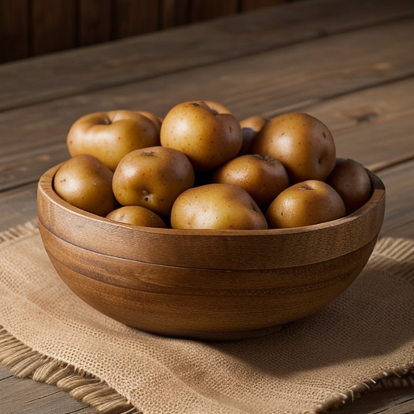
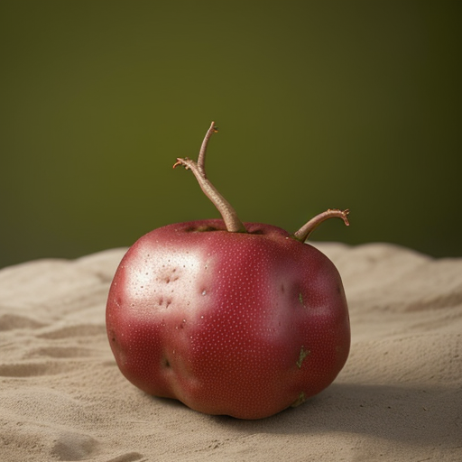
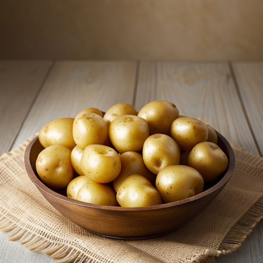

Types of Potatoes

Russet Potato:
-
✓ Russet potatoes, also known as Idaho potatoes, are one of
the most widely consumed potato varieties in the United States.
-
✓ They have a thick, rough skin that is usually brown and a
white, starchy flesh.
-
✓Russet potatoes are ideal for baking, mashing, frying, and
making fluffy mashed potatoes or crispy french fries due to their
high starch content.
Red Potato
-
✓ Red potatoes are known for their vibrant red or pink skin
and firm, waxy texture.
-
✓ They have a slightly sweet and creamy flesh that holds its
shape well when cooked, making them perfect for boiling, roasting,
and potato salads.
-
✓ Their thin skin is edible and adds color and texture to
various dishes.


Yukon Gold Potatoes:
-
✓ Yukon Gold potatoes are prized for their golden-yellow
flesh and thin, light-brown skin
-
✓ They have a creamy, buttery flavor and a medium starch
content, making them versatile in the kitchen.
-
✓ Yukon Gold potatoes are excellent for mashed potatoes,
boiling, baking, and making creamy potato dishes.
Genius Potato
-
✓ This potato is a brilliant problem solver with a heart of
gold, embodying both genius and kindness.
-
✓ She possess the unique talent of turning challenges into
opportunities.
-
✓ Also, this a tribitue to her because i have taken many
ideas form her website.